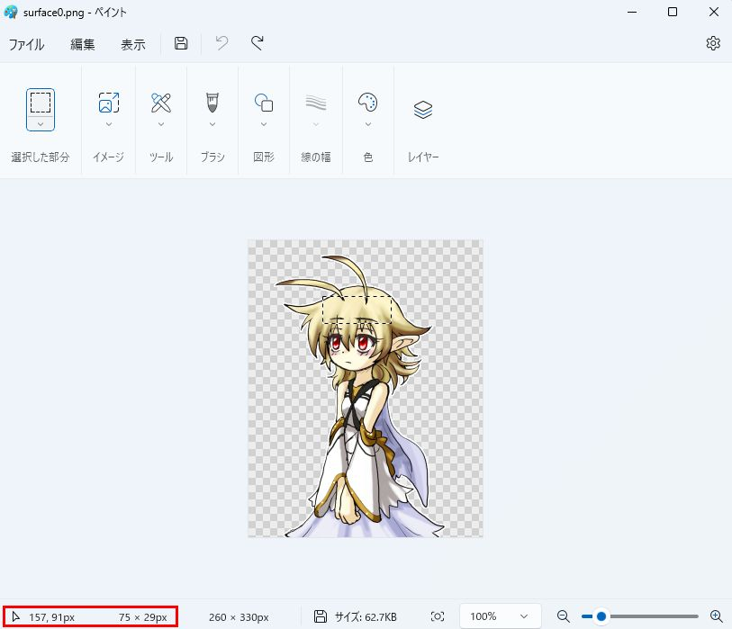

概要
最低限必要なファイル
descript.txtの書き方
surfaces.txtについて
サンプル画像
領域作成
アニメーション
サーフェスの合成
よくあるエラーと原因
記述内容全文
目次
概要
ゴースト作りたくて絵を用意したけど、設定がよくわからない！という人向けのメモです。
フォルダ構成や基本的なゴーストの知識は、ukadocの「全体の構成」に詳しい説明があります。
ここでは、「詳しい書き方よりも、ともかく最低限の動作をするシェルを作りたい」という方を対象としています。
さらに、SSPを使うことを想定しており、SSPでのみ実装されている機能を使用します。
materiaやC.R.O.Wなど他ベースウェアでは動作しないこともあります。
上記ベースウェアの対応も考える場合は、このメモは参考になりません。
materiaに対応させる場合は、materia本家の仕様書の「Shell」「SERIKO / MAYUNA」を確認してください。
また、surfaces.txtの書き方は、古い書き方と新しい書き方（SERIKO/1.xとSERIKO/2.0）がありますが、新しい書き方で記述しています。
古い書き方は2001年頃、新しい書き方は2002年頃に整備されました。
別の資料と矛盾が見られた場合は、古い書き方の資料を見ている可能性があります。
補足
2015年現在では上記のうち開発が続いているのはSSPのみです。
SSPでのみ動作確認したゴーストも多く配布されている点を留意してください。
（materiaの最終更新は2002年、C.R.O.Wの最終更新は2005年）
着せ替えなど、設定の手順が複雑なものは着せ替えやアニメーションの作り方に説明があります。
最低限必要なファイル
最低限のファイルは、以下の3つです。
- descript.txt
- surface0.png
- surface10.png
descript.txtがシェルの情報を記入するファイルで、シェルの名前や作者の名前などを記入します。
surface0.pngはメインキャラの基本ポーズ、surface10.pngはサブキャラの基本ポーズです。
これだけでサーフェス0番とサーフェス10番を表示出来るようになります。
ゴーストのトーク辞書でサーフェス0番を指定するとsurface0.pngが、サーフェス10番を指定するとsurface10.pngが表示されます。
また、0と10だけでなく、任意のsurface????.pngを使用出来ます。
「?」は半角数字なら何桁でも良いですが、頭の0は無視されます。
例えばsurface0000.pngとsurface0.pngは両方ともサーフェス0番に表示される画像となるので注意してください。
このようなサーフェス番号が重複するファイルが無いようにしてください。
なお、透過色が適用されるので、pngファイルは半透明の画像なども使用できます。
補足
必須であるsurface0.pngとsurface10.pngを除き、jpgファイルなども使用することができます。
SSPではsurface0.pngとsurface10.pngがなくても動きますが、伺かの仕様では必須です。
必須ファイルが足りない場合、他サービスを受ける時に不具合が起こる可能性があります。
descript.txtの書き方
詳細な項目の説明はukadocのShell設定に譲り、ここではサンプルを記載します。
----ここから----
charset,Shift_JIS
craftman,sakusha_no_namae
craftmanw,作者のなまえ
craftmanurl,http://www.xxxxxxxxxxxxxxxx.co.jp/
id,master
name,master
type,shell
seriko.use_self_alpha,1
----ここまで----
メモ帳などを開き、上記をそのままコピーし、descriptと名前をつけて保存すれば使えます。
最下段のseriko.use_self_alpha,1という記述は、ファイルのアルファチャンネル（透過情報）を利用するという設定です。
補足
seriko.use_self_alpha,1の記述がない場合は、左上のpixelのRGB値が透明色として扱われます。
ファイルの透過情報は全て無視されます。
これはmateriaの動作と互換です。
保存したdescript.txtの下記の太字の部分を自分の名前および自分のサイトに変更してください。
空欄でも可ですが、craftmanwは最低限書いておいた方がよいでしょう。
----ここから----
craftman,sakusha_no_namae
craftmanw,作者のなまえ
craftmanurl,http://www.xxxxxxxxxxxxxxxx.co.jp/
----ここまで----
補足
idとnameが「master」であるのは通例です。
ゴーストはシェルを複数持つことができますが、メインとなるシェルには「master」とつけることが多いです。
idは半角の英数字のみ、nameは好きな名前をつけることが出来ます。
ですが、半角のカンマやスラッシュなどの記号はゴースト側で問題を起こすことがあるので避けた方が無難です。
idはSSPが内部的に管理するもので、nameがユーザーの目に見えるシェルの名前です。
例：
id,addshell
name,追加シェル
追加シェルに関して
ゴーストのマスターシェルではなく、追加シェルとして配布する場合は、install.txtが必要となります。
install.txtの書き方の例：
----ここから----
charset,Shift_JIS
type,shell
name,追加シェル（シェルの名前）
directory,addshell（インストール時に作られるフォルダ名）
accept,さくら（追加シェルを作るゴーストの\0側の名前）
----ここまで----
上記install.txtを、descript.txtと同じフォルダに置きます。
構成は以下のようになります。
- フォルダ
- install.txt
- descript.txt
- readme.txt
- surface0.png
- surface10.png
- surfaces.txt
「profile」というフォルダがある場合、フォルダごと削除してください。
上記をフォルダに格納しzip圧縮すれば、追加シェルとして扱われるファイルの完成です。
解凍時に、フォルダが入れ子にならないように注意してください。
拡張子を.narに変えると、伺か関連ファイルと認識されるので、アップ先に拡張子制限がなければ変更しておきましょう。
surfaces.txtについて
上記のdescript.txtと、任意のsurface????.pngがあれば、シェルとしては動作すると説明しました。
しかし、これだけではただ絵が出るだけです。
まばたきなどのアニメーションはしませんし、頭など体の部位指定もされていません。
それを設定するのがsurfaces.txtです。
説明はukadocが詳しいため、ここではサンプルコードの表示と最低限の解説のみを行います。
今回、surfaces.txtに書くものを以下に示します。
- メインキャラの部位、「head」「hand」
- メインキャラのまばたきアニメーション
ここでheadはキャラクターの頭部を指定する部位、handは手の部位とします。
サンプル画像
サンプルとして以下の絵を用意しました。
元の画像は、ボトル猫様が公開されているフリーシェルです。
pngファイルの白い部分は、透過色に設定しています。
main_blink1.pngはまばたき用の半目、main_blink2.pngは目閉じです。
surface0.pngとsurface10.pngを除く画像ファイルは、名称を好きなようにつけてかまいません。
surface????.pngという名前のファイルのみが特別な扱いを受けます。
補足
特別な扱いとは、element0指定がない場合に、「element0,base,surface????.png,0,0」が補完されるようになることです。
（上記の書き方については「領域作成」の段で記述しています）
element0指定の記述を省略出来ますが、記述しておいた方がよいです。
上記まばたき用ファイルは、目閉じのみを用意したり、半目のパターンを増やしたりすることもできます。
ですが、ここでは最低限の構成として上記のようにしました。
また、メインキャラとサブキャラに、差分を1枚ずつ用意しました。
readme.txtには、必要に応じて好きな情報を記入しておきましょう。
フリーシェルを使用した場合は、フリーシェルに同梱されていたreadme.txtをそのまま同梱することが多いです。
補足
自分で絵を用意する場合は、シェル作成支援文書を参考にしてみてください。
このメモでは、透過pngを使う前提で記述しています。
領域作成
ここでは、部位判定の領域を設定します。
まずは、キャラクターの頭部を設定してみることにします。
そのためには、どこからどこまでが頭なのかを指定する必要があります。
基本的に、部位判定の領域は四角形で表され、左上と右下の座標を指定します。
楕円や多角形でも指定できますが、ここでは触れません。
補足
フリーソフトウェアとして、判定定義の支援ソフトも存在します。
上記ソフトウェアの使い方などはここでは説明を省きます。
必要に応じて調べてください。
ここでは、Windows付属のペイントで座標を取得する方法を示します。
- ペイントで画像を開く
- 上部メニューから選択ツールを使用
- 左上→右下の順で四角形を選択
上記を行うと、選択中に下部ステータスバーに座標が表示されます。

この例では、「横76縦60の位置から、横81縦37の範囲を選択した」という情報が表示されています。
最初の位置に、選択した範囲をそれぞれ加算すれば、右下の位置が取得出来ます。
上記画像では、左上が76,60、右下が157,97です。
この範囲をheadと指定するsurfaces.txtを以下に示します。
----ここから----
charset,Shift_JIS
descript
{
version,1
}
surface0
{
element0,base,surface0.png,0,0
collision0,76,60,157,97,head
}
surface1
{
element0,base,surface1.png,0,0
collision0,76,60,157,97,head
}
surface10
{
element0,base,surface10.png,0,0
}
surface11
{
element0,base,surface11.png,0,0
}
----ここまで----
最初のcharset,Shift_JISとdescript{ version,1 }は、必ずファイルの先頭に書いてください。
element0,base,????.png,0,0で始まる表記は、表示する画像の指定です。
1枚の画像を表示するだけの場合は、上記のように記述し、????.pngを使用する画像の名称に置き換えてください。
これで、サーフェス0、1、10、11が使用可能となりました。
ゴーストを起動させると、サーフェス0と1が頭部に判定を持っており、カーソルの形状が変わるのを確認出来ます。
補足
カーソルの形状は、自由に設定出来ます。
以下は、hipという部位を作った場合、hipの上では手のひらカーソルを表示する記述です。
surfaces.txtの任意の場所に記述すると有効になります。
----ここから----
sakura.cursor
{
mouseup0,hip,system:hand
mousedown0,hip,system:hand
}
----ここまで----
mouseup?では、マウスを載せた時のカーソルの形状、mousedown?では、マウスをクリックした時のカーソルの形状を指定します。
?は数字で、上記例の通り、mouseupとmousedownで一組です。
別の部位も変更したい場合は、mouseup1〜とmousedown1〜を記述してください。
上記は、メインキャラ側でしか適用されません。
サブキャラでも適用する場合、以下をsurfaces.txtに追加してください。
----ここから----
kero.cursor
{
mouseup0,hip,system:hand
mousedown0,hip,system:hand
}
----ここまで----
sakura、keroはそれぞれchar0、char1と書くこともできます。
3人目のキャラクターの場合はchar2と記述します。
キャラクター
メインキャラやサブキャラというのは、ゴーストのトークを書く時に必要になってきます。
基本的に二人一組（1人や3人以上も可能）で喋るため、どっち側にどのサーフェスを表示するかを考える必要があります。
トークを書く時は重要ですが、シェルを作る時はほとんど気にする必要はありません。
この設定は例外的にキャラクター指定が必要です。
sakura.cursorのみを記述しておくと、メインキャラ側とサブキャラ側に同じサーフェスを表示した場合、メインキャラのみカーソルが変わります。
また、自分で作ったカーソルファイルを適用することもできます。
カーソルファイルは、シェル画像と同じように、shell\master（現在作っているシェルのフォルダ）内に置いてください。
以下は、サブキャラのheadという部位に、自作のカーソルを表示する例です。
----ここから----
kero.cursor
{
mouseup0,head,mycursor.cur
mousedown0,head,mycursor.cur
}
----ここまで----
特殊な領域名
領域名を「bust」または「Bust」にすると特殊な処理が行われます。
全キャラクター分のmouseup0,bust,system:handとmouseup0,bust,system:gripが自動的に設定されます。
上記のheadの設定と同様のことを行えば、色々な部位を設定できます。
以下に、handという手の部位を設定した例を示します。
変更の無い部分は省いていますので、上記と照らしあわせて補完してください。
----ここから----
surface0
{
element0,base,surface0.png,0,0
collision0,76,60,157,97,head
collision1,97,263,127,316,hand
}
surface1
{
element0,base,surface1.png,0,0
collision0,76,60,157,97,head
collision1,97,263,127,316,hand
}
----ここまで----
今回、画像が2枚なので楽ですが、もしこれが10枚、20枚となったら設定や修正が大変です。
まとめて複数のサーフェスに一括設定する方法を以下に示します。
表情のみが違うサーフェスなどにまとめて設定することができます。
----ここから----
surface0
{
element0,base,surface0.png,0,0
collision0,76,60,157,97,head
collision1,97,263,127,316,hand
}
surface1
{
element0,base,surface1.png,0,0
collision0,76,60,157,97,head
collision1,97,263,127,316,hand
}
surface.append0-1
{
collision0,76,60,157,97,head
collision1,97,263,127,316,hand
}
----ここまで----
surface.append????という表記は、surface????に追加記述するという意味です。
そのため、先にsurface????が設定されていない場合は、無効化されます。
この書き方をすると、既に記述済みのサーフェスに、追加で何かを設定できます。
上記の例では、surface0と1に、ベースになる画像のみを定義しています。
その後、領域をまとめて追加しています。
このように、共通部分だけをまとめて追加するという形にすると、後々、追加や修正が楽になります。
surface.append0-1と記述すると、surface0とsurface1の両方に追加する記述となります。
補足
surface0-1と記述すると、surface0とsurface1自体を同時に定義する記述となります。
また、指定範囲に関してはsurface0-2,5-6,8と記述すると、surface0,1,2,5,6,8の6つの定義となります。
ハイフンで繋ぐとその間の数字を全て含む指定となり、カンマで区切ることで複数の指定が出来ます。
アニメーション
サーフェス0にまばたきをするアニメーションを記述します。
ここでは、サンプルにあるmain_blink1.png（半目）とmain_blink2.png（目閉じ）を使用します。
目を開いている→半目→目閉じ→半目→目を開く、と素早く画像を切り替え、まばたきのように見えるアニメーションを作成します。
----ここから----
surface.append0
{
animation0.interval,random,2
animation0.pattern0,overlay,1000,50,0,0
animation0.pattern1,overlay,1001,50,0,0
animation0.pattern2,overlay,1000,50,0,0
animation0.pattern3,overlay,-1,50,0,0
}
surface1000
{
element0,base,main_blink1.png,0,0
}
surface1001
{
element0,base,main_blink2.png,0,0
}
----ここまで----
surfaces.txt末尾に上記を追加してください。
以下の解説は、改変するつもりがないのであれば、読む必要はありません。
surface1000
{
element0,base,main_blink1.png,0,0
}
上記ではsurface1000を定義していますが、surface1000.pngという名前でない画像も使用できます。
ファイル名で分かりやすいため、surface????.pngという名前がよく使われていますが、好きな名前をつけられます。
animation0.interval,random,2
上記「animation0.interval,〜」は、「これ以降はアニメーション0番の設定をする」という宣言です。
これ以降の行では、アニメーション0番の動作を指定します。
「〜,random,2」は、まばたきする頻度を表しています。
「random,?」と書くと、毎秒?分の1の確率でアニメーションを発動させることができます。
また、random,2は「sometimes」、random,4は「rarely」と書いても同じ動きをします。
「periodic,?」と書くと、?秒ごとにアニメーションを発動させることができます。
必ず一定タイミングでまばたきさせたい場合にはperiodicを使ってください。
人のまばたき回数は1分に15〜20回と言われるため、random,3かrandom,4、periodic,3かperiodic,4が人に近いです。
まばたきが多いと不安、緊張状態を表すため、random,2にすることで気弱なキャラという表現もできるでしょう。
補足
アニメーション番号は、同じサーフェス内で重複してはいけませんが、別サーフェスなら重複してもOKです。
「サーフェス0番の、アニメーション0番」という管理をされているため、両方が重複しなければ問題ありません。
ただ、surface.appendなどを使用して記述すると、予想外のところで重複することがあるので、注意してください。
アニメーション0番の設定が全て終わったら、「animation1.interval,〜」として記述をすることで、いくつでもアニメーションを追加できます。
「サーフェス0番の、アニメーション0番」という管理をされているため、両方が重複しなければ問題ありません。
ただ、surface.appendなどを使用して記述すると、予想外のところで重複することがあるので、注意してください。
アニメーション0番の設定が全て終わったら、「animation1.interval,〜」として記述をすることで、いくつでもアニメーションを追加できます。
animation0.pattern0,overlay,1000,50,0,0
animation0.pattern1,overlay,1001,50,0,0
animation0.pattern2,overlay,1000,50,0,0
animation0.pattern3,overlay,-1,50,0,0
これは、アニメーションの動作部分です。
上の行で「animation0.interval,〜」と書いたので、ここでアニメーション0番の実際の動作を記述しています。
animation0.pattern0,overlay,1000,50,0,0は、「アニメーション0番のパターン0でサーフェス1000を0.05秒（50ミリ秒）後に座標0,0に上から重ねて表示する」という意味です。
座標指定は非常に面倒なので、全く同じサイズの画像を用意したり、今回のように上半身部分のみを切り取った画像を用意すると手軽です。
こうすることで、座標0,0の指定でピタリと画像を重ねることが出来ます。
最後の「animation0.pattern3,overlay,-1,50,0,0」で今まで重ねた画像を全て消去しています。
サーフェスに-1を指定すると、今まで重ねた画像を全て消去することができます。
補足
シェルのアニメーションは、いわゆる「パラパラ漫画」のようなものです。
「pattern0」という表記は、パラパラ漫画の1枚目、という表示だと思ってください。
始まりが1からではなく、0からということに注意してください。
「pattern0」という表記は、パラパラ漫画の1枚目、という表示だと思ってください。
始まりが1からではなく、0からということに注意してください。
アニメーションの時間は、ランダムにすることも出来ます。
例えば、pattern2を以下のように書くと、目を閉じている時間が0.05秒〜0.2秒の間からランダムとなります。
animation0.pattern2,overlay,1000,50-200,0,0
サーフェスの合成
先ほど、まばたきするアニメーションを作りました。
その画像の中に、目を閉じた上半身のみの画像がありました。
せっかく画像があるので、ずっと目をつむったままのサーフェスを作ろうと思います。
ただし上半身の部位しかないため、画像単体では表示できません。
そこで、複数枚の画像を合成してサーフェスとする記述を以下に記述します。
----ここから----
surface0
{
element0,base,surface0.png,0,0
}
surface1
{
element0,base,surface1.png,0,0
}
surface2
{
element0,base,surface0.png,0,0
element1,overlay,main_blink2.png,0,0
}
surface.append0-2
{
collision0,76,60,157,97,head
collision1,97,263,127,316,hand
}
----ここまで----
surface.append0-2の部分は既存部分の書き換えです。
surface2が新しく追加した部分です。
目を開いた基本ポーズのsurface0.pngに、上から目を閉じたmain_blink2.pngを重ねています。
これで、サーフェス2に目を閉じた画像を追加することが出来ました。
surface.append0-2と記述を変更したことで、サーフェス2には頭と手の判定もついています。
element?〜と記述することで、画像を重ねて1枚のサーフェスに出来ます。
「element0,base,????.png,0,0」という表記は、基本（base）とする下地の画像です。
「element1,overlay,????.png,0,0」は、基本の画像に被せる（overlay）画像を指定しています。
baseとoverlay以外の画像貼り付け方法は、ukadocにまとめられています。
後ろの「0,0」は貼り付ける位置（左上座標）です。
また、elementで指定する場合は、アニメーション時と違い、画像ファイルを直接指定できます。
よくあるエラーと原因
ここではsurfaces.txtを作成している時に出してしまいがちなエラーと、その原因を示します。
[SERIKO]Surface=0/Animation=0/Pattern=0 二重定義されています。
アニメーションに記述ミスがあります。
メッセージの通り、surface0のアニメーション0番が間違っています。
surface.append0
{
animation0.interval,random,2
animation0.pattern0,overlay,1000,50,0,0
animation0.pattern0,overlay,1001,50,0,0
animation0.pattern2,overlay,1000,50,0,0
animation0.pattern3,overlay,-1,50,0,0
}
pattern0が2つあるため、エラーを起こしています。
下のpattern0を、pattern1と書き換えれば解決します。
patternは原則0から順番に1ずつ増やし、重複してはいけません。
[SERIKO]Surface=0/Animation=0 二重定義されています。
サーフェス0のアニメーションの番号指定が間違っています。
surface.append0
{
animation0.interval,random,6
animation0.pattern0,overlay,1000,50,0,0
animation0.pattern1,overlay,1001,50,0,0
animation0.pattern2,overlay,1000,50,0,0
animation0.pattern3,overlay,-1,50,0,0
animation0.interval,random,6
animation0.pattern0,overlay,1000,50,0,0
animation0.pattern1,overlay,1001,50,0,0
animation0.pattern2,overlay,1000,100-200,0,0
animation0.pattern3,overlay,-1,50,0,0
}
上記は1つのサーフェスにアニメーションを2つ設定していますが、両方0番を指定してしまっています。
下のアニメーション番号を1番にすることでエラーが出なくなります。
[SERIKO]Surface=2/Element=0 二重定義されています。
サーフェス2の画像合成の指定が間違っています。
surface2
{
element0,base,surface0.png,0,0
element0,overlay,main_blink2.png,0,0
}
element0を2つ指定してしまっています。
下のelement0をelement1とすることでエラーが出なくなります。
この例は、surfaceの記述部分とsurface.appendでの追加記述部分に重複していることもあるので、調べてみてください。
[SERIKO]Line=22:Animation=1->0
animation番号を間違えた場合は上記の様なメッセージが出ます。
surface.append0
{
animation0.interval,random,2
animation0.pattern0,overlay,1000,50,0,0
animation1.pattern1,overlay,1001,50,0,0
animation0.pattern2,overlay,1000,50,0,0
animation0.pattern3,overlay,-1,50,0,0
}
上記は0番アニメーションの中に、1つだけ1番が混じっています。
animation0にして番号を揃えることでエラーが出なくなります。
[SERIKO]Line=22 新定義を使用しているのに、旧い定義方法が使われています。
冒頭で述べたように、surfaces.txtは古い書き方と新しい書き方の2種類があります。
主にアニメーション関係で書き方が大きく変わっているので、このあたりでエラーが出やすいです。
----新しい書き方----
surface0
{
animation0.interval,sometimes
animation0.pattern0,overlay,1000,50,0,0
animation0.pattern1,overlay,1001,50,0,0
animation0.pattern2,overlay,1000,50,0,0
animation0.pattern3,overlay,-1,50,0,0
}
----古い書き方----
surface0
{
0interval,sometimes
0pattern0,1000,5,overlay,0,0
0pattern1,1001,5,overlay,0,0
0pattern2,1000,5,overlay,0,0
0pattern3,-1,5,overlay,0,0
}
上記はまったく同じ動きをするアニメーションです。
修正する場合、旧定義では時間単位が0.01秒単位、新定義では時間単位が0.001秒単位ということも注意してください。
このような、数字から始まるアニメーション定義がないか探してみてください。
materiaなど別ベースウェアで動かす場合を除き、SSPのサポートが受けられる新しい書き方をした方がよいでしょう。
[SERIKO]Surface=11 どこからも使われていません。
surfaces.txtの記述が不足しています。
上記メッセージであれば、surface11.pngがあるのにsurfaces.txtに記述されていません。
以下を追加することでエラーが出なくなります。
surface11
{
}
または、以下のように書いてもOKです。
上記は中身が空っぽで後に見返した時に混乱することもあるので、以下の書き方を推奨します。
surface11
{
element0,base,surface11.png,0,0
}
[SERIKO]Surface=0/Animation=0/Pattern=0->Surface=1000 存在していません。
アニメーションで指定しているサーフェスがありません。
animation0.pattern0,overlay,1000,50,0,0など、アニメーション0のパターン0でサーフェス1000を指定しています。
しかし、surface1000がsurfaces.txtに記述されていない、またはsurface1000.pngが存在していません。
必要な画像（以下の例ではsurface1000.png）を用意し、以下を追加することでエラーが出なくなります。
surface1000
{
element0,base,surface1000.png,0,0
}
[SERIKO]Line=51:Surface=1000 Element 存在していません。:main_blink1.png
指定している画像がありません。
element0,base,main_blink1.png,0,0など、画像ファイル名を指定していますが、そのファイルが存在していません。
必要な画像（今回の例ではmain_blink1.png）を用意することでエラーが出なくなります。
記述内容全文
- 今回用意した画像ファイル
- 今回作成したdescript.txt charset,Shift_JIS craftman,sakusha_no_namae craftmanw,作者のなまえ craftmanurl,http://www.xxxxxxxxxxxxxxxx.co.jp/ id,master name,master type,shell seriko.use_self_alpha,1
- 今回作成したsurfaces.txt charset,Shift_JIS descript { version,1 } surface0 { element0,base,surface0.png,0,0 } surface1 { element0,base,surface1.png,0,0 } surface2 { element0,base,surface0.png,0,0 element1,overlay,main_blink2.png,0,0 } surface.append0-2 { collision0,76,60,157,97,head collision1,97,263,127,316,hand } surface.append0 { animation0.interval,random,2 animation0.pattern0,overlay,1000,50,0,0 animation0.pattern1,overlay,1001,50,0,0 animation0.pattern2,overlay,1000,50,0,0 animation0.pattern3,overlay,-1,50,0,0 } surface10 { element0,base,surface10.png,0,0 } surface11 { element0,base,surface11.png,0,0 } surface1000 { element0,base,main_blink1.png,0,0 } surface1001 { element0,base,main_blink2.png,0,0 }
2013/11/14 作成
2013/11/15 修正
2013/12/16 修正
2014/02/01 追加シェルに関して加筆
2014/02/01 アニメーションの説明を修正
2014/02/09 レイアウト修正
2014/02/09 element0の二重定義エラーの対処を加筆
2014/03/06 SSP/2.3.20で上記が解消されたため削除、また同バージョンでエラーが出ない記述に修正
2014/03/07 一部表記に矛盾があったので修正
2014/03/17 段落「サーフェスの合成」の記述誤りを修正、surface????.pngの特別な扱いについて解説を加筆
2014/03/26 アニメーション定義の解説を加筆、「よくあるエラーと原因」加筆
2014/04/05 領域判定のカーソルの形状を変える方法を加筆
2014/04/06 段落「概要」に「着せ替えやアニメーションの作り方」へのリンク追加
2014/11/20 判定定義の支援ソフトにさとりすとを追加、分かりにくいと思われる記述に補足を追加
2014/12/18 ukadocリンク修正
2015/01/03 透過png使用の設定について加筆、一部分かりにくいと思われる記述を修正
2015/01/05 サンプルを修正
2015/01/10 html5の書式エラーを修正
2015/01/13 文字コードをUTF-8に変更

この 作品 は クリエイティブ・コモンズ 表示 - 継承 2.1 日本 ライセンスの下に提供されています。
「伺か」に関する資料集として引用する場合に限り、このメモの文章部分のみをパブリックドメインとして扱ってもかまいません。